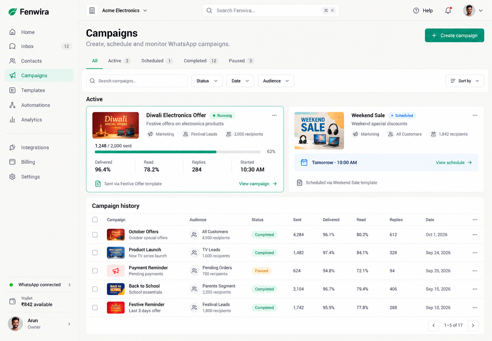
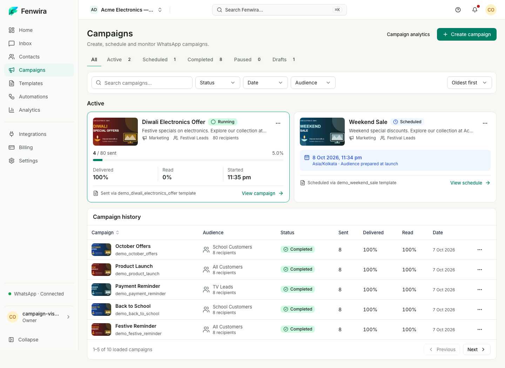

Supplied reference

Final implementation — 1440 × 1000 viewport

Reference-led layout using actual API records. Names, dates, metrics and supported actions differ with real product data. This comparison does not declare visual approval.


Before · First pass · 1024px · 768px · 375px · History page 2